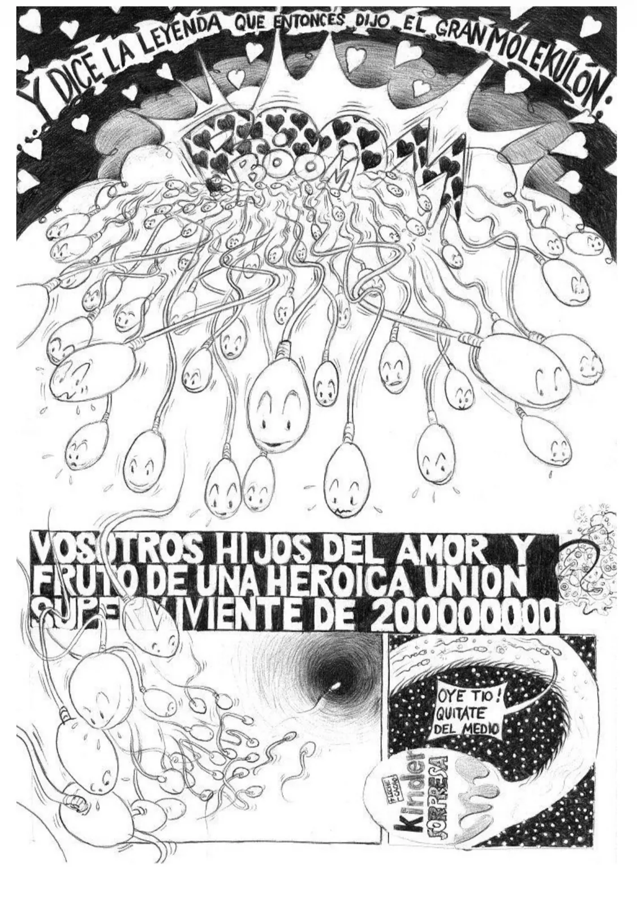
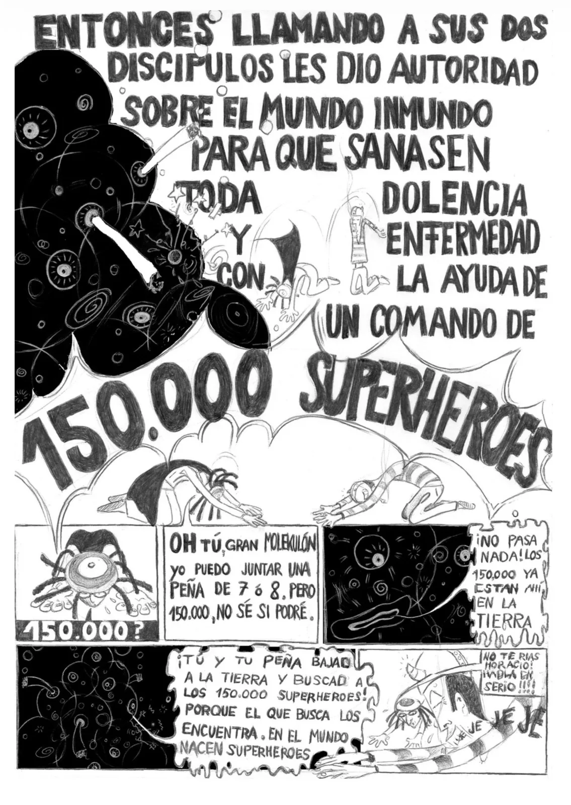
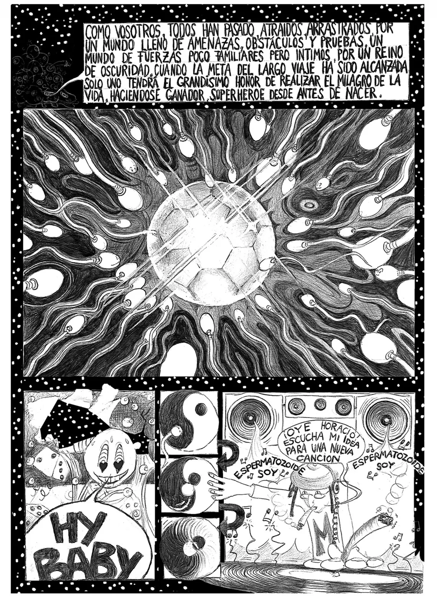
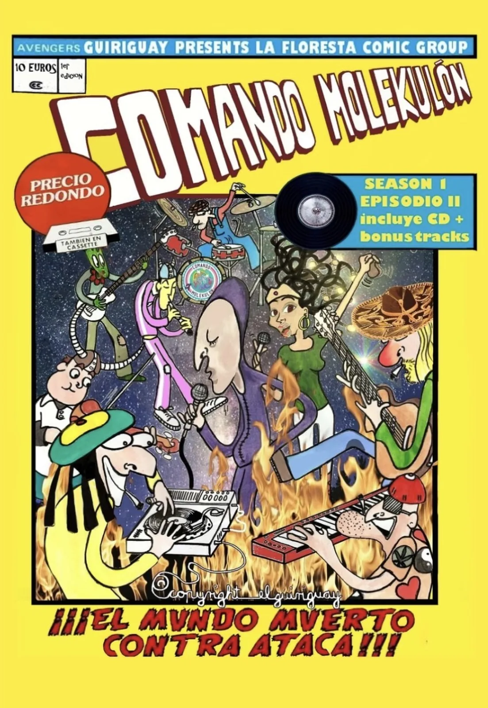

D'on surt tot això
«Si estás deprimido, recuerda que eres el espermatozoide que ganó.» La frase és d'en Groucho Marx. El projecte sencer surt d'aquí.
Mirada de prop, no és una broma: és un fet. Vas travessar tenebres i obstacles per fer el miracle de ser aquí, i vas guanyar una cursa de dos-cents milions. Néixer ja va ser la teva primera gesta, i no et va fer falta cap superpoder perquè ja el tenies.
D'aquesta frase en va sortir una cançó, de la cançó un còmic, del còmic una banda, i de la banda una pel·lícula que encara no existeix. Això és la seqüència, en ordre.
Acte I · el primer còmic
L'encàrrec: no els heu de fabricar, els heu de trobar
El Gran Molekulon mira la Terra i decideix que el que cal canviar no és el món: és la banda sonora. Envia dos deixebles a reclutar 150.000 superherois, i ells dubten que en puguin reunir tants. La resposta és la que ho capgira tot: ja hi són, escampats, fent coses més petites del que saben fer.





Acte II · el segon còmic
La caiguda: no s'han quedat sense ganes, sense combustible
El segon número és on el projecte diu contra què va. No contra un enemic de fora: contra una utopia que col·lapsa pel seu propi pes perquè ningú va posar regles d'intercanvi, contra un vilà que no ataca sinó que ofereix —et crea la necessitat i després te la cobra—, i contra els dos que ja tens a casa: la por que paralitza abans de començar i el rumor que corroeix la confiança.
El bajón
Còmic dos. La nau perd altura. No s'han quedat sense ganes: s'han quedat sense combustible.
per filmarMatadeón
Arriben a una utopia de gaudi absolut. Dura el que dura: un grup sense regles clares d'intercanvi col·lapsa pel seu propi…
per filmarEl paper higiènic
I enmig del caos apareix ell, oferint un paper higiènic molt més suau. Val diners, i ells no saben què és això. Acaben…
ja filmatI els que no calen de fora
No tots els vilans vénen de fora. La por que paralitza abans de començar i el rumor que corroeix la confiança ja hi són.
per filmarEl forat de cuc
Encadenats cap a la Maldita Realitat, perquè assentin el cap. I ell contesta: "I play music and paint pictures. I don't need…
per filmarEl páramo i la llavor
Resisteixen cantant els seus propis noms, recordant qui són. El talent adormit no és talent perdut.
per filmarI això no és només dibuix
La banda existeix, i ha tocat
14 peces publicades entre capítols, videoclips i directes. No són material promocional: són la part de la pel·lícula que ja està rodada, i tres plans del guió surten d'aquí. Mira'n un abans de seguir —és el camí més curt per entendre de què va això.
Acte III · s'està rodant ara
El final no està publicat. Tu hi surts.
El tercer acte no es pot escriure en una taula, perquè depèn de quanta gent hi hagi. Cada persona que hi entra i aporta de debò és un node més, i el repartiment es tanca quan siguem 150.000. Avui el comptador va per zero, i és de debò: surt del registre públic i no d'un número inventat.
Entrar-hi no és donar diners ni omplir un formulari llarg. És gravar-te un minut contestant les quatre preguntes de sempre —les mateixes que es fan a l'aula i als tallers—, i el vídeo el fas amb el mòbil que tens a la mà.
Qui ets?
El teu nom, o el nom que vulguis portar al Comando, i d'on ets. Res més.
Quins superpoders tens?
El que saps fer i podries ensenyar o donar en hores. Fins a cinc. No cal que soni important: cosir, escoltar, arreglar bicicletes i fer que la gent es parli també hi compten.
I quines superarmes?
El que tens i no fas servir cada dia, i que algú altre podria fer servir. Una escala, una càmera, un local, una furgoneta, un taladre.
I ara ensenya'l: fes-ne una demo
La part que ho canvia tot. No ho expliquis, fes-ho: deu segons germinant, soldant, afinant, amassant, explicant una cosa difícil fàcil. Un superpoder dit és una promesa; un superpoder ensenyat ja és una prova, i és el que fa que algú del teu barri et vingui a buscar.
Amb això ja ets un personatge: no un avatar inventat, sinó el que ja fas, amb nom i amb superarma. Si no et surt explicar-ho, hi ha un kit que t'ho escriu a partir del que has contestat.
I on es penja
El vídeo el puges tu a YouTube, des del teu compte, i queda teu. No hi ha cap formulari que se'l quedi ni cap safata nostra on acabi. El que el fa trobable és l'etiqueta, i això és exactament el que diu la història: no et reclutem, et trobem.
Les quatre coses que ha de portar
Durada: 30 a 60 segons. · Títol: Comando Molekulon · el teu nom · la teva població. · Etiquetes: #comandomolekulon #molekulon #superpoders #latevapoblació. · Visibilitat: públic —si és ocult, l'etiqueta no serveix de res i ningú el troba.
A la descripció, les quatre respostes escrites i l'adreça d'aquesta pàgina. Quan hi siguis, el teu capítol és al mateix lloc que els dels altres: el canal del Comando ↗.
El que això vol dir, dit clar: un vídeo públic a YouTube és públic —amb la teva cara, la teva veu i el nom que hi posis—, i aquesta decisió la prens tu. La fitxa del SOS és una altra cosa i es queda al teu aparell. I a l'aula, no. Els vídeos de criatures no es publiquen: a l'escola l'exercici es fa sense penjar res, i això ho explica la guia de la Fàbrica de Superherois.
El format del títol i les etiquetes són una proposta de la casa: si no t'encaixen, el que compta és que l'etiqueta hi sigui perquè algú et pugui trobar.